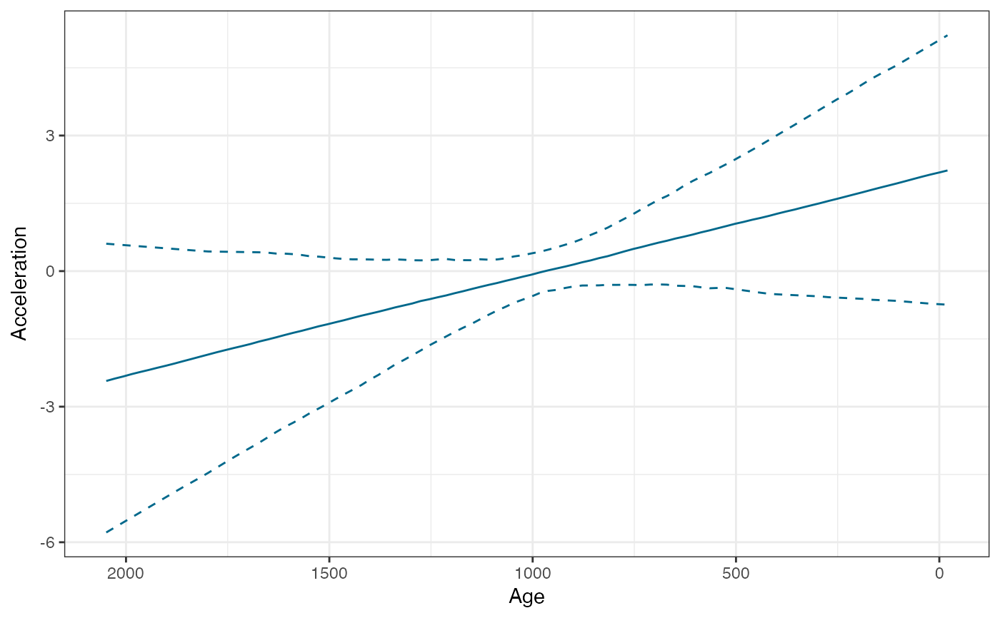

Relative sea level rate (RSL) estimation
BchronRSL( BchronologyRun, RSLmean, RSLsd, degree = 1, iterations = 10000, burn = 2000, thin = 8 )
| BchronologyRun | Output from a run of |
|---|---|
| RSLmean | A vector of RSL mean estimates of the same length as the number of predictPositions given to the |
| RSLsd | A vector RSL standard deviations of the same length as the number of predictPositions given to the |
| degree | The degree of the polynomial regression: linear=1 (default), quadratic=2, etc. Supports up to degree 5, though this will depend on the data given |
| iterations | The number of MCMC iterations to run |
| burn | The number of starting iterations to discard |
| thin | The step size of iterations to discard |
An object of class BchronRSLRun with elements itemize
This function fits an errors-in-variables regression model to relative sea level (RSL) data. An errors-in-variables regression model allows for uncertainty in the explanatory variable, here the age of sea level data point. The algorithm is more fully defined in the reference below
Andrew C. Parnell and W. Roland Gehrels (2013) 'Using chronological models in late holocene sea level reconstructions from salt marsh sediments' In: I. Shennan, B.P. Horton, and A.J. Long (eds). Handbook of Sea Level Research. Chichester: Wiley
# \donttest{ # Load in data data(TestChronData) data(TestRSLData) # Run through Bchronology RSLrun <- with(TestChronData, Bchronology( ages = ages, ageSds = ageSds, positions = position, positionThicknesses = thickness, ids = id, calCurves = calCurves, predictPositions = TestRSLData$Depth, jitterPositions = TRUE ))#>#>#>#>#>#>#> | | | 0% | | | 1% | |= | 1% | |= | 2% | |== | 3% | |== | 4% | |=== | 4% | |=== | 5% | |=== | 6% | |==== | 6% | |==== | 7% | |===== | 8% | |===== | 9% | |====== | 9% | |====== | 10% | |====== | 11% | |======= | 11% | |======= | 12% | |======== | 13% | |======== | 14% | |========= | 14% | |========= | 15% | |========= | 16% | |========== | 16% | |========== | 17% | |=========== | 18% | |=========== | 19% | |============ | 19% | |============ | 20% | |============ | 21% | |============= | 21% | |============= | 22% | |============== | 23% | |============== | 24% | |=============== | 24% | |=============== | 25% | |=============== | 26% | |================ | 26% | |================ | 27% | |================= | 28% | |================= | 29% | |================== | 29% | |================== | 30% | |================== | 31% | |=================== | 31% | |=================== | 32% | |==================== | 33% | |==================== | 34% | |===================== | 34% | |===================== | 35% | |===================== | 36% | |====================== | 36% | |====================== | 37% | |======================= | 38% | |======================= | 39% | |======================== | 39% | |======================== | 40% | |======================== | 41% | |========================= | 41% | |========================= | 42% | |========================== | 43% | |========================== | 44% | |=========================== | 44% | |=========================== | 45% | |=========================== | 46% | |============================ | 46% | |============================ | 47% | |============================= | 48% | |============================= | 49% | |============================== | 49% | |============================== | 50% | |============================== | 51% | |=============================== | 51% | |=============================== | 52% | |================================ | 53% | |================================ | 54% | |================================= | 54% | |================================= | 55% | |================================= | 56% | |================================== | 56% | |================================== | 57% | |=================================== | 58% | |=================================== | 59% | |==================================== | 59% | |==================================== | 60% | |==================================== | 61% | |===================================== | 61% | |===================================== | 62% | |====================================== | 63% | |====================================== | 64% | |======================================= | 64% | |======================================= | 65% | |======================================= | 66% | |======================================== | 66% | |======================================== | 67% | |========================================= | 68% | |========================================= | 69% | |========================================== | 69% | |========================================== | 70% | |========================================== | 71% | |=========================================== | 71% | |=========================================== | 72% | |============================================ | 73% | |============================================ | 74% | |============================================= | 74% | |============================================= | 75% | |============================================= | 76% | |============================================== | 76% | |============================================== | 77% | |=============================================== | 78% | |=============================================== | 79% | |================================================ | 79% | |================================================ | 80% | |================================================ | 81% | |================================================= | 81% | |================================================= | 82% | |================================================== | 83% | |================================================== | 84% | |=================================================== | 84% | |=================================================== | 85% | |=================================================== | 86% | |==================================================== | 86% | |==================================================== | 87% | |===================================================== | 88% | |===================================================== | 89% | |====================================================== | 89% | |====================================================== | 90% | |====================================================== | 91% | |======================================================= | 91% | |======================================================= | 92% | |======================================================== | 93% | |======================================================== | 94% | |========================================================= | 94% | |========================================================= | 95% | |========================================================= | 96% | |========================================================== | 96% | |========================================================== | 97% | |=========================================================== | 98% | |=========================================================== | 99% | |============================================================| 99% | |============================================================| 100%# Now run through BchronRSL RSLrun2 <- BchronRSL(RSLrun, RSLmean = TestRSLData$RSL, RSLsd = TestRSLData$Sigma, degree = 3)#> | | | 0% | | | 1% | |= | 1% | |= | 2% | |== | 3% | |== | 4% | |=== | 4% | |=== | 5% | |=== | 6% | |==== | 6% | |==== | 7% | |===== | 8% | |===== | 9% | |====== | 9% | |====== | 10% | |====== | 11% | |======= | 11% | |======= | 12% | |======== | 13% | |======== | 14% | |========= | 14% | |========= | 15% | |========= | 16% | |========== | 16% | |========== | 17% | |=========== | 18% | |=========== | 19% | |============ | 19% | |============ | 20% | |============ | 21% | |============= | 21% | |============= | 22% | |============== | 23% | |============== | 24% | |=============== | 24% | |=============== | 25% | |=============== | 26% | |================ | 26% | |================ | 27% | |================= | 28% | |================= | 29% | |================== | 29% | |================== | 30% | |================== | 31% | |=================== | 31% | |=================== | 32% | |==================== | 33% | |==================== | 34% | |===================== | 34% | |===================== | 35% | |===================== | 36% | |====================== | 36% | |====================== | 37% | |======================= | 38% | |======================= | 39% | |======================== | 39% | |======================== | 40% | |======================== | 41% | |========================= | 41% | |========================= | 42% | |========================== | 43% | |========================== | 44% | |=========================== | 44% | |=========================== | 45% | |=========================== | 46% | |============================ | 46% | |============================ | 47% | |============================= | 48% | |============================= | 49% | |============================== | 49% | |============================== | 50% | |============================== | 51% | |=============================== | 51% | |=============================== | 52% | |================================ | 53% | |================================ | 54% | |================================= | 54% | |================================= | 55% | |================================= | 56% | |================================== | 56% | |================================== | 57% | |=================================== | 58% | |=================================== | 59% | |==================================== | 59% | |==================================== | 60% | |==================================== | 61% | |===================================== | 61% | |===================================== | 62% | |====================================== | 63% | |====================================== | 64% | |======================================= | 64% | |======================================= | 65% | |======================================= | 66% | |======================================== | 66% | |======================================== | 67% | |========================================= | 68% | |========================================= | 69% | |========================================== | 69% | |========================================== | 70% | |========================================== | 71% | |=========================================== | 71% | |=========================================== | 72% | |============================================ | 73% | |============================================ | 74% | |============================================= | 74% | |============================================= | 75% | |============================================= | 76% | |============================================== | 76% | |============================================== | 77% | |=============================================== | 78% | |=============================================== | 79% | |================================================ | 79% | |================================================ | 80% | |================================================ | 81% | |================================================= | 81% | |================================================= | 82% | |================================================== | 83% | |================================================== | 84% | |=================================================== | 84% | |=================================================== | 85% | |=================================================== | 86% | |==================================================== | 86% | |==================================================== | 87% | |===================================================== | 88% | |===================================================== | 89% | |====================================================== | 89% | |====================================================== | 90% | |====================================================== | 91% | |======================================================= | 91% | |======================================================= | 92% | |======================================================== | 93% | |======================================================== | 94% | |========================================================= | 94% | |========================================================= | 95% | |========================================================= | 96% | |========================================================== | 96% | |========================================================== | 97% | |=========================================================== | 98% | |=========================================================== | 99% | |============================================================| 99% | |============================================================| 100%#> Posterior Medians with 95% credible intervals... #> Power Lower Median Upper #> mean -0.8239 -0.6568 -0.4789 #> linear -0.7849 -0.4613 -0.1548 #> quadratic -0.1841 0.3197 0.8094 #> cubic -0.8646 -0.3762 0.1561 #> Age RSL_2.5 RSL_50 RSL_97.5 #> 1 1951.000000 -1.7613792 -1.49051050 -1.240391482 #> 2 1931.171717 -1.7159286 -1.46136980 -1.228812866 #> 3 1911.343434 -1.6813868 -1.43352289 -1.216505047 #> 4 1891.515152 -1.6395162 -1.40458595 -1.194029459 #> 5 1871.686869 -1.6005936 -1.37825498 -1.171698945 #> 6 1851.858586 -1.5713059 -1.35362956 -1.154344062 #> 7 1832.030303 -1.5406247 -1.32977835 -1.139238108 #> 8 1812.202020 -1.5106958 -1.30732297 -1.117599681 #> 9 1792.373737 -1.4826085 -1.28478318 -1.094001582 #> 10 1772.545455 -1.4618211 -1.26219263 -1.072002839 #> 11 1752.717172 -1.4340012 -1.24004876 -1.053076882 #> 12 1732.888889 -1.4132578 -1.21869118 -1.035604317 #> 13 1713.060606 -1.3935963 -1.19890400 -1.018473742 #> 14 1693.232323 -1.3717009 -1.18072374 -0.997512324 #> 15 1673.404040 -1.3488731 -1.16128743 -0.976566165 #> 16 1653.575758 -1.3353047 -1.14329544 -0.960555228 #> 17 1633.747475 -1.3202038 -1.12543242 -0.944017986 #> 18 1613.919192 -1.2989473 -1.10847685 -0.925375957 #> 19 1594.090909 -1.2879027 -1.09228504 -0.905066121 #> 20 1574.262626 -1.2698050 -1.07638579 -0.889385225 #> 21 1554.434343 -1.2547003 -1.06125621 -0.873199499 #> 22 1534.606061 -1.2406353 -1.04588762 -0.855259387 #> 23 1514.777778 -1.2277991 -1.03136057 -0.843502769 #> 24 1494.949495 -1.2146800 -1.01744470 -0.832685172 #> 25 1475.121212 -1.2009569 -1.00358148 -0.819223717 #> 26 1455.292929 -1.1870290 -0.99091840 -0.805032335 #> 27 1435.464646 -1.1707005 -0.98001594 -0.792482895 #> 28 1415.636364 -1.1539519 -0.96789812 -0.780545248 #> 29 1395.808081 -1.1366805 -0.95652945 -0.771178158 #> 30 1375.979798 -1.1195328 -0.94602543 -0.762491671 #> 31 1356.151515 -1.1031215 -0.93454833 -0.752222412 #> 32 1336.323232 -1.0900577 -0.92320312 -0.744078339 #> 33 1316.494949 -1.0782631 -0.91394034 -0.735414230 #> 34 1296.666667 -1.0642028 -0.90392573 -0.728729136 #> 35 1276.838384 -1.0544110 -0.89567937 -0.722602097 #> 36 1257.010101 -1.0417052 -0.88547553 -0.714896259 #> 37 1237.181818 -1.0269083 -0.87709779 -0.709430731 #> 38 1217.353535 -1.0121094 -0.86848172 -0.706063026 #> 39 1197.525253 -1.0007529 -0.85923717 -0.700835144 #> 40 1177.696970 -0.9918288 -0.85079120 -0.697259316 #> 41 1157.868687 -0.9819665 -0.84294730 -0.694144959 #> 42 1138.040404 -0.9724422 -0.83467655 -0.688628515 #> 43 1118.212121 -0.9608564 -0.82573820 -0.682917634 #> 44 1098.383838 -0.9522098 -0.81762925 -0.676609561 #> 45 1078.555556 -0.9436017 -0.80926244 -0.673049607 #> 46 1058.727273 -0.9344794 -0.80145636 -0.666903839 #> 47 1038.898990 -0.9237167 -0.79456641 -0.660626444 #> 48 1019.070707 -0.9157840 -0.78667949 -0.654949278 #> 49 999.242424 -0.9076886 -0.77919480 -0.648071400 #> 50 979.414141 -0.9009384 -0.77177459 -0.637624009 #> 51 959.585859 -0.8985524 -0.76314477 -0.629538342 #> 52 939.757576 -0.8936841 -0.75578723 -0.619000914 #> 53 919.929293 -0.8872594 -0.74774407 -0.609428630 #> 54 900.101010 -0.8828685 -0.74197300 -0.598311599 #> 55 880.272727 -0.8785063 -0.73508960 -0.590228647 #> 56 860.444444 -0.8713121 -0.72636285 -0.578725155 #> 57 840.616162 -0.8662401 -0.71902200 -0.569815221 #> 58 820.787879 -0.8612166 -0.71151668 -0.560309701 #> 59 800.959596 -0.8551821 -0.70344485 -0.548517955 #> 60 781.131313 -0.8482737 -0.69631324 -0.536694102 #> 61 761.303030 -0.8427893 -0.68847472 -0.523536138 #> 62 741.474747 -0.8360572 -0.67998167 -0.509223992 #> 63 721.646465 -0.8311049 -0.67197202 -0.497062909 #> 64 701.818182 -0.8266005 -0.66238850 -0.485491674 #> 65 681.989899 -0.8216379 -0.65280591 -0.474827352 #> 66 662.161616 -0.8145694 -0.64270473 -0.464384190 #> 67 642.333333 -0.8068293 -0.63280729 -0.451891850 #> 68 622.505051 -0.8002555 -0.62375148 -0.436114627 #> 69 602.676768 -0.7921534 -0.61310203 -0.423013883 #> 70 582.848485 -0.7834893 -0.60278020 -0.410345773 #> 71 563.020202 -0.7746192 -0.59191986 -0.399020717 #> 72 543.191919 -0.7630817 -0.58111548 -0.387041271 #> 73 523.363636 -0.7516174 -0.56909297 -0.375125961 #> 74 503.535354 -0.7393986 -0.55739939 -0.363251784 #> 75 483.707071 -0.7263372 -0.54447430 -0.351393894 #> 76 463.878788 -0.7131814 -0.53083050 -0.336827500 #> 77 444.050505 -0.7009109 -0.51728568 -0.322827488 #> 78 424.222222 -0.6866322 -0.50270495 -0.310759329 #> 79 404.393939 -0.6683874 -0.48890054 -0.295269450 #> 80 384.565657 -0.6494494 -0.47446072 -0.284060694 #> 81 364.737374 -0.6304648 -0.45999425 -0.273033049 #> 82 344.909091 -0.6107331 -0.44387106 -0.261420281 #> 83 325.080808 -0.5876814 -0.42695969 -0.248616224 #> 84 305.252525 -0.5643553 -0.41032650 -0.235687195 #> 85 285.424242 -0.5417621 -0.39256224 -0.222612555 #> 86 265.595960 -0.5177430 -0.37439751 -0.209179845 #> 87 245.767677 -0.4939687 -0.35498750 -0.194788163 #> 88 225.939394 -0.4707337 -0.33505641 -0.182154943 #> 89 206.111111 -0.4472645 -0.31308851 -0.175423025 #> 90 186.282828 -0.4232923 -0.29254235 -0.158880561 #> 91 166.454545 -0.3969617 -0.27046107 -0.145429403 #> 92 146.626263 -0.3671032 -0.24686291 -0.127567900 #> 93 126.797980 -0.3387278 -0.22578640 -0.109528586 #> 94 106.969697 -0.3133701 -0.20170863 -0.089994158 #> 95 87.141414 -0.2888504 -0.17649754 -0.063300602 #> 96 67.313131 -0.2662183 -0.15064060 -0.037518902 #> 97 47.484848 -0.2409642 -0.12394050 -0.006068901 #> 98 27.656566 -0.2189129 -0.09672272 0.030582269 #> 99 7.828283 -0.2036795 -0.06919055 0.072410227 #> 100 -12.000000 -0.1906431 -0.04202766 0.118384559 #> Age RSL_rate_2.5 RSL_rate_50 RSL_rate_97.5 #> 1 1951.000000 0.342503015 1.4392938 2.5782691 #> 2 1931.171717 0.358933272 1.3947868 2.4879900 #> 3 1911.343434 0.370909766 1.3581160 2.4050828 #> 4 1891.515152 0.384445080 1.3183717 2.3094331 #> 5 1871.686869 0.394706573 1.2779288 2.2278133 #> 6 1851.858586 0.398044885 1.2387124 2.1447753 #> 7 1832.030303 0.403823976 1.1997783 2.0631063 #> 8 1812.202020 0.404352104 1.1636360 1.9805679 #> 9 1792.373737 0.416016681 1.1278995 1.9024659 #> 10 1772.545455 0.432048136 1.0960203 1.8260513 #> 11 1752.717172 0.441699684 1.0624055 1.7531952 #> 12 1732.888889 0.446815101 1.0278025 1.6824529 #> 13 1713.060606 0.447641464 0.9942819 1.6083732 #> 14 1693.232323 0.449094857 0.9569615 1.5385419 #> 15 1673.404040 0.453979038 0.9243666 1.4736266 #> 16 1653.575758 0.451192720 0.8944490 1.4039955 #> 17 1633.747475 0.452479833 0.8650583 1.3452723 #> 18 1613.919192 0.443919939 0.8368095 1.2834833 #> 19 1594.090909 0.434802055 0.8108070 1.2333952 #> 20 1574.262626 0.432351947 0.7812605 1.1779534 #> 21 1554.434343 0.433892148 0.7558782 1.1296543 #> 22 1534.606061 0.420109296 0.7296520 1.0799412 #> 23 1514.777778 0.404953361 0.7092718 1.0476071 #> 24 1494.949495 0.387231182 0.6822428 1.0091599 #> 25 1475.121212 0.356537397 0.6569179 0.9868487 #> 26 1455.292929 0.341926779 0.6355099 0.9630660 #> 27 1435.464646 0.322219517 0.6154849 0.9423884 #> 28 1415.636364 0.296906798 0.5964549 0.9159983 #> 29 1395.808081 0.274433213 0.5754397 0.8982206 #> 30 1375.979798 0.248972043 0.5572934 0.8925304 #> 31 1356.151515 0.217498180 0.5383559 0.8814124 #> 32 1336.323232 0.198773683 0.5228085 0.8754826 #> 33 1316.494949 0.170908851 0.5067599 0.8646765 #> 34 1296.666667 0.143043885 0.4912966 0.8600626 #> 35 1276.838384 0.117735300 0.4763290 0.8635578 #> 36 1257.010101 0.097775087 0.4630754 0.8543076 #> 37 1237.181818 0.074474662 0.4520823 0.8415657 #> 38 1217.353535 0.051009100 0.4413154 0.8390891 #> 39 1197.525253 0.030971176 0.4306392 0.8351021 #> 40 1177.696970 0.010063901 0.4214527 0.8296511 #> 41 1157.868687 0.001099684 0.4126971 0.8274347 #> 42 1138.040404 -0.011280613 0.4062503 0.8266805 #> 43 1118.212121 -0.020496239 0.3975939 0.8277411 #> 44 1098.383838 -0.036598772 0.3915675 0.8244277 #> 45 1078.555556 -0.049734597 0.3876284 0.8253116 #> 46 1058.727273 -0.058139430 0.3828533 0.8265635 #> 47 1038.898990 -0.064125161 0.3789657 0.8259644 #> 48 1019.070707 -0.065134018 0.3770210 0.8255341 #> 49 999.242424 -0.067745168 0.3752486 0.8226312 #> 50 979.414141 -0.065783412 0.3737954 0.8189650 #> 51 959.585859 -0.059085865 0.3740001 0.8193054 #> 52 939.757576 -0.052258158 0.3753108 0.8196548 #> 53 919.929293 -0.039209588 0.3760260 0.8194956 #> 54 900.101010 -0.034692393 0.3766508 0.8194736 #> 55 880.272727 -0.029045289 0.3814302 0.8184445 #> 56 860.444444 -0.014816993 0.3864825 0.8103353 #> 57 840.616162 0.006987662 0.3917934 0.8071006 #> 58 820.787879 0.021674852 0.3992050 0.8078962 #> 59 800.959596 0.037186036 0.4072236 0.8001959 #> 60 781.131313 0.057164225 0.4178574 0.7936368 #> 61 761.303030 0.077950098 0.4244922 0.7952877 #> 62 741.474747 0.092913872 0.4332315 0.7987389 #> 63 721.646465 0.104543875 0.4440076 0.7919021 #> 64 701.818182 0.136061801 0.4543115 0.7858716 #> 65 681.989899 0.169774103 0.4657718 0.7824110 #> 66 662.161616 0.194799555 0.4781805 0.7830148 #> 67 642.333333 0.217818027 0.4939035 0.7772222 #> 68 622.505051 0.241218721 0.5071002 0.7762025 #> 69 602.676768 0.272287391 0.5248883 0.7785804 #> 70 582.848485 0.298004105 0.5424529 0.7932574 #> 71 563.020202 0.333963434 0.5622139 0.7918524 #> 72 543.191919 0.371828946 0.5808980 0.7996650 #> 73 523.363636 0.392056108 0.6019668 0.8155399 #> 74 503.535354 0.417601375 0.6202130 0.8349279 #> 75 483.707071 0.439668318 0.6403666 0.8518459 #> 76 463.878788 0.456905662 0.6665607 0.8787450 #> 77 444.050505 0.481014616 0.6872539 0.9113473 #> 78 424.222222 0.486339069 0.7118748 0.9473202 #> 79 404.393939 0.498635517 0.7354727 0.9879796 #> 80 384.565657 0.508613609 0.7607671 1.0321991 #> 81 364.737374 0.508256303 0.7885795 1.0937919 #> 82 344.909091 0.505579920 0.8178081 1.1490495 #> 83 325.080808 0.503732364 0.8469031 1.2090693 #> 84 305.252525 0.496276205 0.8784268 1.2688701 #> 85 285.424242 0.487396077 0.9103510 1.3358166 #> 86 265.595960 0.486676105 0.9424574 1.4097623 #> 87 245.767677 0.470556129 0.9698314 1.4805319 #> 88 225.939394 0.462748074 1.0027882 1.5582996 #> 89 206.111111 0.454711256 1.0362386 1.6290971 #> 90 186.282828 0.435888870 1.0702326 1.7075167 #> 91 166.454545 0.415173951 1.1081440 1.7828735 #> 92 146.626263 0.394620861 1.1444051 1.8638036 #> 93 126.797980 0.382720339 1.1825426 1.9500103 #> 94 106.969697 0.366725568 1.2195539 2.0435738 #> 95 87.141414 0.352177040 1.2567494 2.1355538 #> 96 67.313131 0.337524687 1.2972217 2.2394966 #> 97 47.484848 0.322800824 1.3383506 2.3436788 #> 98 27.656566 0.304991111 1.3778126 2.4368078 #> 99 7.828283 0.291772671 1.4184608 2.5332512 #> 100 -12.000000 0.276035768 1.4629990 2.6377303 #> Age RSL_accel_2.5 RSL_accel_50 RSL_accel_97.5 #> 1 1951.000000 -5.0120279 -2.16793638 0.8119029 #> 2 1931.171717 -4.9180052 -2.12645060 0.8052518 #> 3 1911.343434 -4.8239826 -2.08758788 0.7986007 #> 4 1891.515152 -4.7299599 -2.04936604 0.7919496 #> 5 1871.686869 -4.6339617 -2.00690908 0.7852985 #> 6 1851.858586 -4.5304090 -1.96417628 0.7786474 #> 7 1832.030303 -4.4268563 -1.91991645 0.7671884 #> 8 1812.202020 -4.3230645 -1.87565663 0.7482922 #> 9 1792.373737 -4.2191224 -1.83081857 0.7293960 #> 10 1772.545455 -4.1151802 -1.78580868 0.7104998 #> 11 1752.717172 -4.0112381 -1.73886064 0.6911989 #> 12 1732.888889 -3.9072960 -1.69212909 0.6718500 #> 13 1713.060606 -3.8039729 -1.65381911 0.6525011 #> 14 1693.232323 -3.7077336 -1.60656493 0.6331522 #> 15 1673.404040 -3.6114943 -1.56125868 0.6138033 #> 16 1653.575758 -3.5152551 -1.51909157 0.6032205 #> 17 1633.747475 -3.4190158 -1.47519770 0.5843803 #> 18 1613.919192 -3.3227765 -1.42838436 0.5604528 #> 19 1594.090909 -3.2265372 -1.38354287 0.5377989 #> 20 1574.262626 -3.1302979 -1.34002744 0.5189583 #> 21 1554.434343 -3.0339298 -1.29709480 0.5001178 #> 22 1534.606061 -2.9372935 -1.25139739 0.4808317 #> 23 1514.777778 -2.8406573 -1.20443579 0.4614166 #> 24 1494.949495 -2.7440210 -1.16060657 0.4420015 #> 25 1475.121212 -2.6475353 -1.11762740 0.4225863 #> 26 1455.292929 -2.5514530 -1.07328667 0.4031712 #> 27 1435.464646 -2.4553706 -1.02899316 0.3837561 #> 28 1415.636364 -2.3591077 -0.99044463 0.3643409 #> 29 1395.808081 -2.2620769 -0.94612923 0.3449258 #> 30 1375.979798 -2.1565002 -0.89995355 0.3255107 #> 31 1356.151515 -2.0593393 -0.85242938 0.3163614 #> 32 1336.323232 -1.9621383 -0.81007075 0.2975069 #> 33 1316.494949 -1.8645725 -0.77537684 0.2868428 #> 34 1296.666667 -1.7666080 -0.72790581 0.2811887 #> 35 1276.838384 -1.6782767 -0.68273760 0.2888351 #> 36 1257.010101 -1.5876452 -0.64115336 0.2703848 #> 37 1237.181818 -1.5009914 -0.59687153 0.2526706 #> 38 1217.353535 -1.4190845 -0.55063604 0.2623119 #> 39 1197.525253 -1.3295456 -0.50358984 0.2708453 #> 40 1177.696970 -1.2455332 -0.45803025 0.2673700 #> 41 1157.868687 -1.1635063 -0.41494655 0.2514208 #> 42 1138.040404 -1.0708376 -0.36559192 0.2543174 #> 43 1118.212121 -0.9928086 -0.32219381 0.2428024 #> 44 1098.383838 -0.9038394 -0.28240715 0.2554027 #> 45 1078.555556 -0.8314370 -0.23823409 0.2702290 #> 46 1058.727273 -0.7485379 -0.19112352 0.3045441 #> 47 1038.898990 -0.6656069 -0.14589934 0.3275962 #> 48 1019.070707 -0.5986399 -0.10115812 0.3699487 #> 49 999.242424 -0.5367397 -0.05377297 0.3967893 #> 50 979.414141 -0.4744517 -0.01633287 0.4380046 #> 51 959.585859 -0.4251538 0.02942989 0.4790545 #> 52 939.757576 -0.4056073 0.06937493 0.5353047 #> 53 919.929293 -0.3695687 0.11449991 0.6062946 #> 54 900.101010 -0.3492655 0.15893743 0.6787222 #> 55 880.272727 -0.3504735 0.20532798 0.7539136 #> 56 860.444444 -0.3551256 0.24863904 0.8455933 #> 57 840.616162 -0.3417127 0.29306311 0.9136979 #> 58 820.787879 -0.3281039 0.33555781 0.9913545 #> 59 800.959596 -0.3283160 0.38656498 1.0953253 #> 60 781.131313 -0.3318781 0.43537953 1.1886683 #> 61 761.303030 -0.3545132 0.48109034 1.2825645 #> 62 741.474747 -0.3361727 0.51986462 1.3748205 #> 63 721.646465 -0.3390045 0.56235256 1.4676538 #> 64 701.818182 -0.3496793 0.60802732 1.5635049 #> 65 681.989899 -0.3811297 0.65893764 1.6543839 #> 66 662.161616 -0.4032765 0.71017222 1.7549579 #> 67 642.333333 -0.4216625 0.75098247 1.8525843 #> 68 622.505051 -0.4325604 0.79328404 1.9564097 #> 69 602.676768 -0.4380464 0.83526055 2.0572586 #> 70 582.848485 -0.4437259 0.87530768 2.1738232 #> 71 563.020202 -0.4503235 0.91078503 2.2809771 #> 72 543.191919 -0.4559710 0.95905695 2.3688729 #> 73 523.363636 -0.4834277 1.00252708 2.4781776 #> 74 503.535354 -0.5128325 1.04712365 2.5736722 #> 75 483.707071 -0.5398559 1.09954572 2.6728773 #> 76 463.878788 -0.5591237 1.14712839 2.7644784 #> 77 444.050505 -0.5773565 1.19209417 2.8636086 #> 78 424.222222 -0.5859579 1.24080733 2.9646205 #> 79 404.393939 -0.5976328 1.28824064 3.0656325 #> 80 384.565657 -0.6184791 1.33199740 3.1664282 #> 81 364.737374 -0.6327841 1.37850748 3.2670885 #> 82 344.909091 -0.6468391 1.42672436 3.3677488 #> 83 325.080808 -0.6608940 1.46629948 3.4684090 #> 84 305.252525 -0.6749489 1.50899959 3.5755048 #> 85 285.424242 -0.6890039 1.55423614 3.6865918 #> 86 265.595960 -0.7050032 1.60157884 3.7976788 #> 87 245.767677 -0.7334695 1.63760776 3.9087658 #> 88 225.939394 -0.7622042 1.67578160 4.0197601 #> 89 206.111111 -0.7909390 1.71483448 4.1253256 #> 90 186.282828 -0.8196738 1.75627666 4.2200341 #> 91 166.454545 -0.8457250 1.79399469 4.3146658 #> 92 146.626263 -0.8616446 1.83704972 4.4092976 #> 93 126.797980 -0.8775642 1.88481279 4.5049232 #> 94 106.969697 -0.8934839 1.92204270 4.6109039 #> 95 87.141414 -0.9094035 1.96350069 4.7168847 #> 96 67.313131 -0.9253231 2.01169301 4.8228655 #> 97 47.484848 -0.9432988 2.05947461 4.9288463 #> 98 27.656566 -0.9649564 2.10016453 5.0299990 #> 99 7.828283 -0.9866141 2.14861484 5.1297125 #> 100 -12.000000 -1.0082718 2.19017814 5.2422851# }